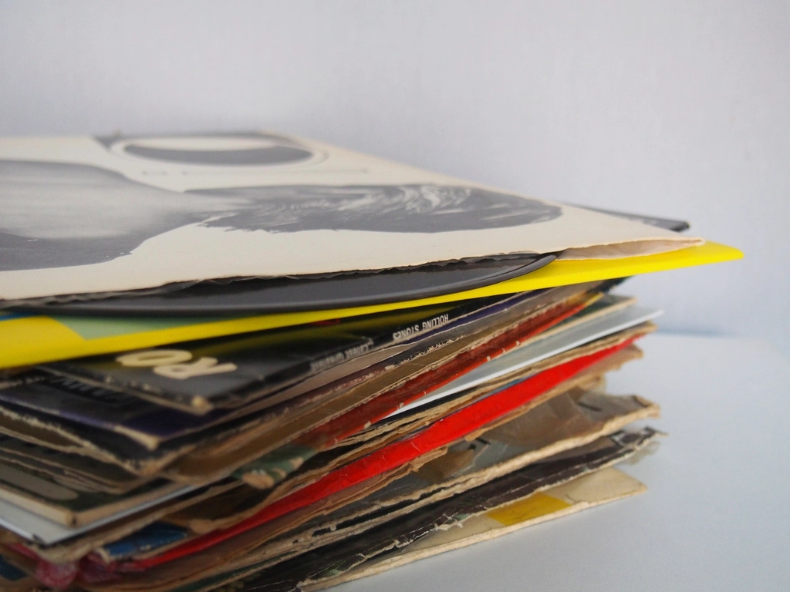

インテリアもオーナーさんの趣味で、洋楽・邦楽のLPレコードやクルマの模型、懐かしいおもちゃが飾られていて、初めて訪ねたのに懐かしい場所に帰ってきたような不思議な感覚でした。リクエストに応じて「JULIE（沢田研二）」のアルバムをかけてもらい、贅沢なランチタイムを過ごせました。口コミを見て来店されたお客様
Analog Cafe / Ota, Gunma
レコードに針を落とす、
太田の午後。
本格オーディオと自家焙煎コーヒーの店 ／ 群馬県太田市
扉を開けると、ビニール盤の黒とアンプの灯りが迎えてくれる場所。
アルテックのスピーカーが鳴らす一枚と、自家焙煎コーヒーの香りを、太田でゆっくりとお楽しみください。
一部の写真はフリー素材のイメージです。実際の店内・お料理の様子は貴店ご提供のものに差し替えます
Why Analog Cafe
選ばれる理由

本格オーディオシステム
アルテックのスピーカー、マッキントッシュのアンプ、Luxmanのレコードプレーヤー。オーディオ好きの来店客から「オーディオマニアが喜びそうなシステムが鎮座している」と評された本格機材が、店内に静かに据えられています。
一部の写真はフリー素材のイメージです。実際の店内・お料理の様子は貴店ご提供のものに差し替えます

リクエストに応えるレコード
洋楽・邦楽、ジャズからポップスまで。店主にリクエストすれば、ターンテーブルに一枚を乗せてかけてくれます。沢田研二からカーペンターズ、ソニー・ロリンズ、ヘレン・メリルまで、その日その時でしか出会えない選曲が魅力です。
一部の写真はフリー素材のイメージです。実際の店内・お料理の様子は貴店ご提供のものに差し替えます
薪ストーブと自家焙煎コーヒー
店内の薪ストーブが灯る日は、いつまでも居たくなる居心地の良さ。自家焙煎のマンデリンG1など、香り高いコーヒーとともにゆっくりとした時間をお過ごしいただけます。
一部の写真はフリー素材のイメージです。実際の店内・お料理の様子は貴店ご提供のものに差し替えます
Voice
お客様の声
アルテックのスピーカーやマッキントッシュのアンプなど、オーディオマニアが喜びそうなシステムが鎮座しています。フレンドリーな店主さんと、店内の薪ストーブで、いつまでも居たくなるような雰囲気でした。出先で立ち寄られたお客様
マスターの人柄の良さが、訪れているお客さんで分かります。カーペンターズは今も聴いています。次に訪れた時はどんな音楽が流れているのか楽しみです。常連のお客様